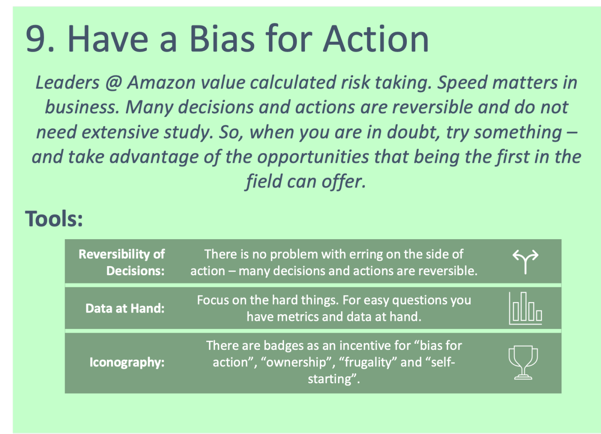

28th of November 2021
The 9th of Amazon's leadership principles is "Have a Bias for Action". Most (if not all) of the principles encourage staff to be proactive, both from a technical and a strategic point of view. There are three tricks supporting you in decision making for AI solutions. "Reversibility of Actions" is one of them.
There is no problem with erring on the side of action - many decisions and actions are reversible.
Remembering that decisions are reversible helps you making decisions and encourages to execute. Newtons first law of motion states that an object at rest will stay at rest, and an object in motion will stay in motion unless acted on by an external force. This applies to teams and organizations, too. If you keep barriers for decision making low, people will act, and the team will stay in motion. Moreover, an organization which keeps moving is also easier to maneuver than one which stands still.[1]
This advice comes in handy when it comes to the creation of use cases to apply ML to. In every employee there is a solutions
architect. The creativity in humans will produce an incredible number of use-cases for ML and AI. Once an organization educates
its employees on Machine Learning and put them into an inspiring environment, they will continuously come up with ideas for the
application of AI. But this force needs to be encouraged - for example with success stories. People who came up with ideas for
innovative AI use cases are encouraged to stay connected to the project and to participate from the success but aren't blamed
if the project is unsuccessful.
I have been trusted with several internal projects within Crayon in which employees came up with innovative ideas of applying ML
to problems of their daily work. For those who don't know Crayons core business: Its core business is software licensing, licensing
optimization and cloud analytics.
One use case that I have been asked to develop together with my small team was very promising and drew a lot of attention from management. I worked on this project for half a year, conceptualizing, prototyping, and validating the approach. After all the work we invested in the project, it turned out, the data was not available in the quality needed to generate the desired business value. We were able to address the business problem with a different approach more effectively and ended up not using Machine Learning. During that time, I have learned an insane amount about the underlying business and the subject matter expert we have been working with - who was the generator of the idea - told me he did learn as much about ML and was inspired and hungry to come up with another idea of that sort to start the next project. The team was not held accountable for the fact that we spent half a year working on a project that didn't result in a successful AI product. It was just seen as an investment. But the project is remembered as one of the first AI projects in this field in the history of a successful transformation of this industry. The next project – his colleague came up with the idea - was successful and ended up being one of my personal flagship solutions.
Now please don't see this example as I would advise anyone to not evaluate projects carefully before starting implementation. In the example given we had done a thorough assessment and our investment was backed by a waterproof business case. The project generated a momentum within the organization and intrinsically motivated employees to come up with more use cases where AI could be a potential solution. This is where I see the idea “Reversibility of Actions” could come in handy for strategic leaders in the space of AI and ML.
When you act as a Solution Architect, you are confronted with decision making on the design of a solution rather than strategic decisions how to incentivize people. But the idea of "Reversibility of Actions" is also applicable on this level. Even if picking the right solution design and defining specifics of the implementation is the most crucial part of a solutions architect, you want to be pragmatic. You can get stuck in a loop of designing, considering and rejection of ideas. Keeping in mind that a specific implementation is modifiable helps you making the initial decision and to start implementation.
Let me give another example: I was in the early stages of developing an ML solution in production for a client. This project was completely new territory at the organization. Setting up solution requirements and discussing the pro and cons of design patterns did not give directions to determine a single design. The requirements were so relaxed that a wide range of designs was suitable to achieve the client's desired goal. I might have been confusing my team when hesitating to decide whether one or the other solution design would be the best, considering the applications development in the future. Taking the trick of "Reversibility of Actions" into account, I decided to implement the initial architecture. It was straight forward to implement and easy to explain. In case the day would come when it wouldn't make sense anymore, we would have to rethink and adjust this part of the solution. But for now, we had a clear architecture to focus on.
[1] Cf. Rossman, J., Masters, R., Cancelosi, C., Miller, R., Weber, K., & Jones, T. (2016). The Amazon Way: 14 leadership principles behind the world's most disruptive company. Clyde Hill Publishing.